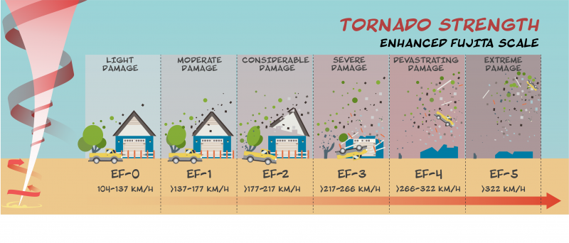
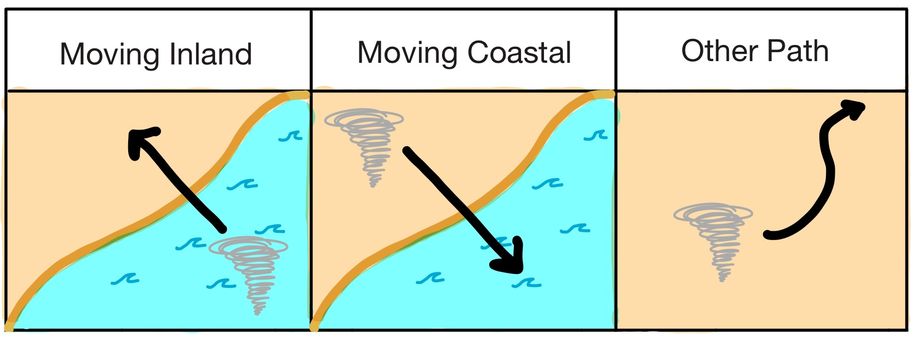

Project Sharknado
Evaluating the Actuarial Risk of Coastal-Origin Tornadoes in the United States
Introduction
The 2013 film Sharknado is fiction…

Figure 1: Sharknado Film from 2013
Introduction
…but intensifying extreme weather due to climate change is a reality for our insurance agency.

Figure 2: Metaphorical representation of Earth’s climate warming.
The Problem
With rising property payouts, is “shark-infested weather” a valid new risk category or a statistical impossibility?
Figure 3: This is a fictional mockup of what a sharknado could look like if they were actually real.
Background
- Tornadoes historically occur in the Central U.S. (“Tornado Alley”)
- Increasing number of tornades in atypical regions (Southeastern U.S.)1
Background
Tornado intensity is classified using the Enhanced Fujita Scale (F0-F5) based on strength, windspeed, & damage.

Figure 5: This is a diagram illustrating the strength, wind speed, and damage typically caused by a tornado at each classification on the Enhanced Fujita Scale (“What Is a Tornado? Let’s Talk Science” 2020).
Background
Dr. Kim Martini’s physical analysis1:
- It is highly unlikely that a tornado could suck a shark out of the water.
- Intense tornadoes (F4) are strong enough to keep a great white shark airborne.
- A typical tornado flying over a typical reef could pick up about 150 sharks.
Research Question
What is the historical frequency, probability, and economic impact of high-intensity tornadoes (F3, F4, and F5) originating in coastal areas (Atlantic, Pacific, and Gulf of Mexico) and moving inland, compared to tornadoes following other trajectories?
Data Sources
NOAA Storm Events Database1
- Records from 1950 to 2025
- Comprehensive official records of US tornadic activity
- Provides metrics for intensity, location, and property damage
US Coastline Shapefile2
- Established using the R package
tigris
- 2025 United States coastline data
- Used to establish geographic boundaries between “Coast” and “Inland”
Methodology
Defining the “Sharknado”:
- Coastal origin
- High intensity (F3-F5)
- Inland trajectory
Defining “Coast” vs. “Inland”:
A 3-mile buffer zone (1.5 miles into water, 1.5 miles onto land).
Methodology
- Step 1: Data pre-processing & filtering
- Filter Storm Events Database for “Tornado” storm types
- Remove records with missing data
Methodology
- Step 1: Data pre-processing & filtering
- Step 2: Classify each tornado’s trajectory

Figure 8: This is a diagram illustrating the movement of tornadoes relative to the coast and inland, with path trajectory labels of “Moving Inland”, “Moving Coastal”, and “Other Path”.
Methodology
- Step 1: Data pre-processing & filtering
- Step 2: Classify each tornado’s trajectory
- Step 3: Classify each tornado’s shark-lifting potential
- Low Potential: F0, F1, or F2 rating on the (Enhanced) Fujita Scale
- High Potential: F3, F4, or F5 rating on the (Enhanced) Fujita Scale
Results
Which tornadoes are “Sharknadoes”?
- High Potential (F3-F5)
- Moving Inland
Results: Frequency

Figure 9: This diagram compares total recorded tornadoes (1950-2025) to tornadoes classified as “High (shark-lifting) Potential” and “Moving Inland” (shapes not to scale).
Results: Frequency

Figure 10: Categorized all tornadoes by path trajectory and visualized the percentages of high vs. low shark-lifting potential within each path trajectory group.
Results: Regional Risk

Figure 11: Categorized only ‘Moving Inland’ trajectory tornadoes by coastal region and visualized the percentages of high vs. low shark-lifting potential within each coastal region group.
Results: Economic Impact
Across 75-years of data
- Total tornado damages: $3.33B
- Average damage per tornado: $106K
- Total “sharknado” damages: $183K
- Average damage per “sharknado”: $91.5K (2 storms)
Results: Economic Impact

Figure 12: Categorized all tornadoes by trajectory and visualized the total property damage inflicted by high vs. low shark-lifting potential tornadoes within each path trajectory group.
Conclusion
- Frequency:
- Sharknado-like events are extremely rare
- 0.0064% of cases (1 in 15,673 events)
- Standard inland tornadoes dominate tornadic activity
- Regional Risks
- Economic Impacts
Conclusion
- Frequency
- Regional Risks:
- Higher potential sharknado risk in Atlantic and Gulf Coasts
- East coast accounts for nearly all “Moving Inland” trajectories (storms are still low intensity)
- Pacific Coast has negligible risk
- Economic Impacts
Conclusion
- Frequency
- Regional Risks
- Economic Impacts:
- Economic threat of sharknadoes is minimal
- Only $183K (less than 0.01%) to total property damages over 75 years
Going Forward
- Treat coastal-origin events as rare risks: These are “long-tail” risks, not primary drivers of loss.
- Maintain standard inland risk models: Continue prioritizing traditional inland tornado risk where 97.86% of historical damage occurs.
- Monitor Southeast shifts: Track storm trends in the Southeastern U.S. where climate change may be gradually increasing coastal events.
Questions?
Thank you for your time.